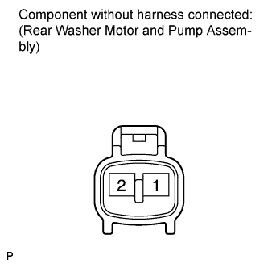

WASHER MOTOR (for Rear Side) > INSPECTION |
| 1. INSPECT REAR WASHER MOTOR & PUMP ASSEMBLY |
 |
Fill the washer jar with washer fluid.
Apply battery voltage to the washer motor and check the operation of the washer motor and pump assembly.
| Measurement Condition | Specified Condition |
| Battery positive (+) → Terminal 1 Battery negative (-) → Terminal 2 | Washer motor and pump operation is normal |